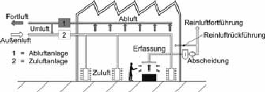
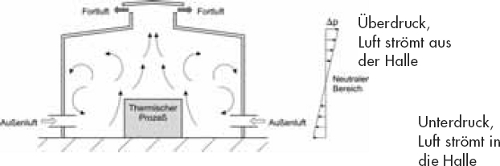

Arbeitsplatzlüftung ist ein Austausch von verunreinigter gegen saubere Luft. Der Austausch kann über die maschinelle (technische) Lüftung oder die freie (natürliche) Lüftung erfolgen.
Maschinelle oder technische Lüftung ist anzuwenden, wenn freie Lüftung (siehe Abschnitt 3.2) nicht ausreicht.
Maschinelle Lüftung ist der Luftaustausch durch Förderung der Luft mit Hilfe von Strömungsmaschinen, z. B. Ventilatoren, Gebläse, Turbinen.

Abbildung 1: Prinzip der maschinellen Lüftung
Es ist darauf zu achten, dass Luftverunreinigungen am Ort ihrer Austritts- oder Entstehungsstelle erfasst (abgesaugt) werden, um durch geeignete Einrichtungen eine Ausbreitung zu verhindern oder zu verringern. Dabei ist die Wahl der geeigneten Erfassungseinrichtung und ihrer Anordnung von entscheidender Bedeutung.
Besonders wirkungsvoll sind Maßnahmen, die zwangsläufig (ohne weiteres Zutun) wirken. Dazu zählen Erfassungseinrichtungen, die den gesamten Arbeitsbereich erfassen, z. B. Kapselung von Bearbeitungsmaschinen, oder an der Entstehungsstelle der Luftverunreinigungen wirksam sind, z. B. Schweißbrenner mit integrierter Absaugung, Schutzschildabsaugung, siehe Beispiel 9.1.
Freie Lüftung ist ein Luftaustausch von Raumluft gegen Außenluft durch Druckunterschiede infolge Wind oder Temperaturdifferenzen.

Abbildung 2: Prinzip der freien Lüftung
Bei freier Lüftung, z. B. Fenster, Türen, Tore, müssen die Anforderungen an die Raumluft auch unter jahreszeitlich ungünstigen Witterungsverhältnissen erfüllt sein. Freie Lüftung kann immer dann als ausreichend angesehen werden, wenn nach Gefährdungsbeurteilung eine geringe Gefährdung auf Grund von Arbeiten
vorliegt.